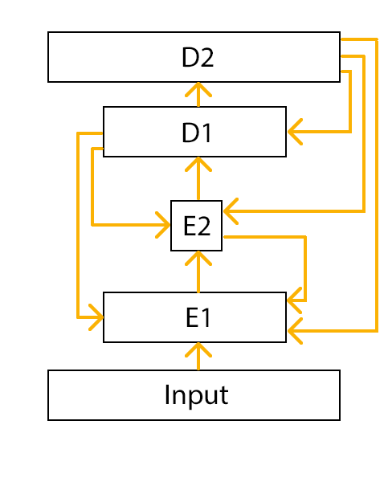
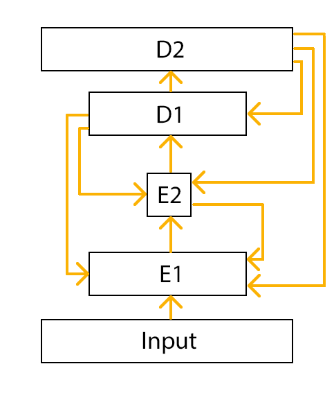
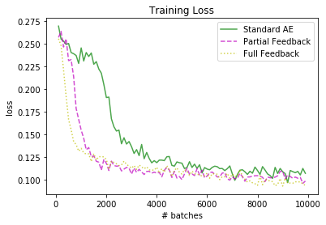
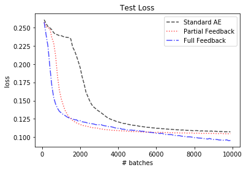
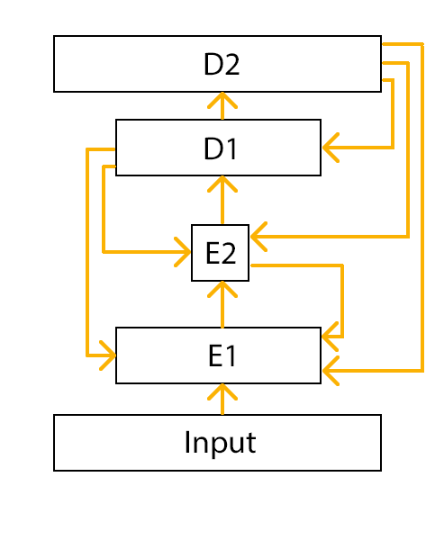

Full Feedback
In the previous experimental setups, feedback was only send from
one decoder layer to one encoder layer. Naturally, we can add more feedback
connections to the network.
In this experiment, every (hidden) layer receives feedback from all the layers
that are above it.
 

(left: old feedback connections, right: full feedback)



(left: old feedback connections, right: full feedback)